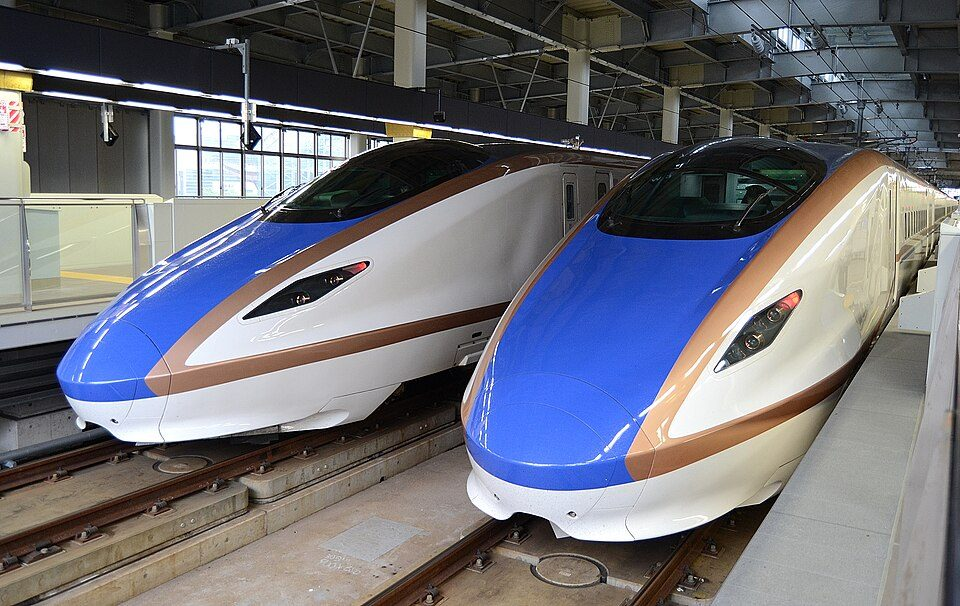
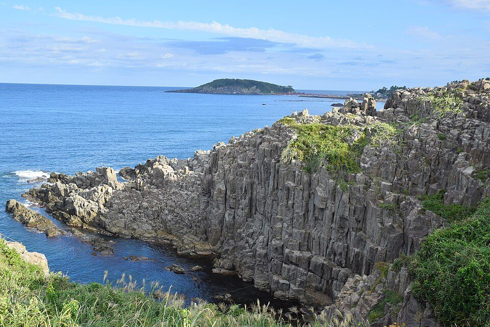
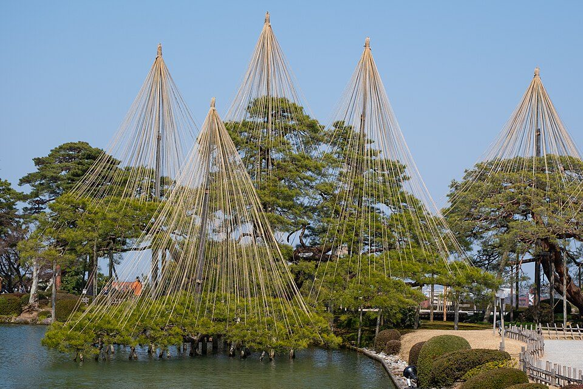
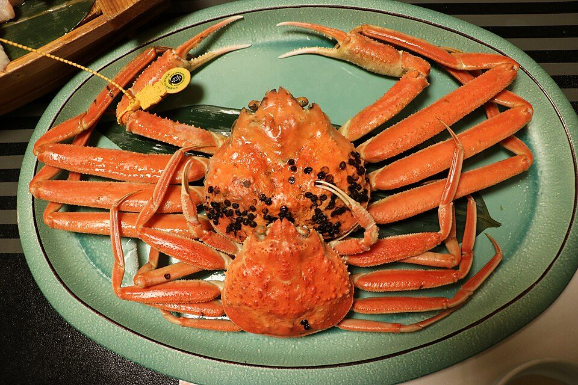

WESTERポイント関西・北陸フリーパスの注意点と、北陸3日間の観光・グルメ
要点まとめ

どんなきっぷ？ どれくらいお得？
3日間、関西〜北陸の特急・新幹線が乗り放題
おとな6,000ポイント（1ポイント＝1円）、こども3,000ポイント[1]
大阪〜金沢を往復するだけで元が取れる
大阪⇔金沢の往復なら12,820円おトク（通常期・普通車指定席）[1]
改悪・注意 使えるのは「基本ポイント」だけ
期間限定ポイントやチャージ専用ポイントでは買えない[11]
くわしく
- WESTERポイントは「基本」「期間・用途限定」「チャージ専用」の3種類。e5489で使えるのは基本だけ[11]
- 基本ポイントの有効期限は、獲得した年度の翌年度末（3月末）[11]
- e5489で新幹線のeチケットを予約すると約1.5%、J-WESTカードで払うと3倍[12]
- 周遊パス商品は、乗ってもポイント付与の対象外[12]
- 普通のICOCAカードで貯まるのは、チャージ専用ポイントだけ[13]
- 基本ポイントには、会員登録したSMART ICOCAやモバイルICOCAが必要[13]
- J-WESTカードの買い物分は、前月16日〜当月15日の利用分が当月26日ごろに付く[14]
- この計算だと、11月16日以降の利用分は発売終了の12月22日に間に合わないと考えられる（筆者の計算）
- タイムズなど他社のポイントから交換できるものもある[15]
買い方と受け取り方
駅の窓口では買えず、JR西日本のネット予約「e5489」だけで発売されます。WESTER会員の登録が必要です。[2]
- ステップ1
WESTER会員に登録し、基本ポイントを6,000以上ためる
人数分のポイントが必要[1]
- ステップ2
e5489で購入（乗車日の1か月前から当日まで）
受付は5:30〜23:50と0:05〜1:50[16]
- ステップ3
指定席を予約する（e5489では最大6列車）
- ステップ4
乗る前に、JR西日本の駅で紙のきっぷを受け取る
使う前に知っておきたい注意点
改悪・注意 敦賀より北は「新幹線だけ」が対象
改悪・注意 運休・遅延でも払い戻しなし
使い始めた後の払い戻しはなく、運休・遅延でも戻らない[3]
指定席は6回まで。数え方に注意
敦賀で乗り継ぐと、予約のしかたで1回にも2回にもなる[2]
グリーン車・グランクラスは対象外
グリーン車は料金券が別、グランクラスは使えない[2]
改悪・注意 冬は湖西線の強風と大雪に注意
湖西線は強風による運転見合わせが比較的多い路線[23]
11〜12月の日付カレンダー
このきっぷの期間中に、始まるもの・終わるものをまとめました。
- 11月6日
ズワイガニ解禁（越前がに・加能ガニ・香箱ガニ）
- 11月7日〜29日の土日など
兼六園・金沢城の無料ライトアップ
11月7・14・15・21・22・28・29日、18:00〜21:00[27]
- 11月15日
やましろカニまつり（加賀・山代温泉）
カニ汁は1杯700円・先着600杯[28]
- 11月30日
黒部峡谷トロッコ（全区間）・立山黒部アルペンルート・鶴仙渓の川床が終了
- 12月1日
富山県美術館の屋上庭園、糸魚川の翡翠園などが冬季閉鎖
- 12月4日
富岩運河環水公園の特別イルミネーション開始
- 12月10日
高岡・瑞龍寺の閉門が16:00に
- 12月22日・24日
フリーパスの発売終了（22日）・利用終了（24日）
- 12月29日
石川の香箱ガニの漁期終了（福井のせいこがには12月31日まで）
駅から行ける観光スポット
読み方
- アクセスはフリーパスで行ける駅から。バス・私鉄は別料金
- 入場料・運賃は各公式サイトの表示額（多くは税込・税抜の表記なし）
敦賀
駅前から周遊バス（1日券500円）で主な見どころを回れる[36]
福井
福井駅からバスで一乗谷と永平寺を1日で回れる[40]

一乗谷朝倉氏遺跡
戦国時代の城下町を発掘・再現。博物館で全体像がわかる
博物館 9:00〜17:00／月曜休／一般700円[41]
大本山永平寺
曹洞宗の大本山
福井県立恐竜博物館
恐竜の大規模な常設展示
日時指定券の事前購入が必要／第2・4水曜休／一般1,000円／えちぜん鉄道とバスで（交通セット券 大人1,700円）[44][45]
東尋坊
約1kmにわたる柱状節理の断崖。冬は強風と荒波
芦原温泉駅から京福バスで約45分＋徒歩5分[46]
くわしく
- 「朝倉・永平寺1日フリーきっぷ」は大人2,000円（2026年10月1日から）[40]
加賀温泉
周遊バス「キャン・バス」1日券1,300円（税込）で回れる[47]
金沢
11月は兼六園の雪吊りと無料ライトアップが見どころ[49][27]

新高岡・高岡
国宝の瑞龍寺は新高岡駅から歩いて20分[57]
富山
駅から歩ける環水公園は冬のイルミネーションが見どころ[33]
終了 黒部宇奈月温泉（トロッコは11月30日まで）
黒部峡谷トロッコの全区間運行は11月30日まで[7]
糸魚川
冬の味覚と駅から行きやすい店
冬の味覚の時期
ズワイガニは11月6日解禁。メスは年内で終わる[6]

店選びの注意
- 営業時間・定休日は、観光協会・店の公式ページで2026年11月1日に確認したもの
- 月〜水曜に休む店が多い
敦賀
福井
加賀温泉・小松
くいもん家 ふるさと 加賀店
ぶりの藁焼き丼など
加賀温泉駅西口から徒歩2分／昼11:00〜15:00・夜17:00〜22:00／火曜休[87]
こまつうどん道場 つるっと
小松うどん
小松駅の高架下／10:00〜15:00／月曜休（祝日は営業）[88]
くわしく
- 小松駅・加賀温泉駅は北陸新幹線の駅なので、フリーパスで行ける[1]
金沢
冬は香箱ガニを使った「カニ面」のおでんが名物[89]
高岡・氷見
富山
糸魚川
イカ墨を使った糸魚川ブラック焼きそばが名物[101]
月徳飯店
糸魚川ブラック焼きそば
11:00〜14:30、17:00〜21:00／月曜休（臨時休業あり）[102]
3日間のモデルコース（筆者の提案）
上の営業日・時刻をもとに組んだ筆者の提案です。
案1：11月の紅葉・トロッコ・ライトアップ（金・土・日など）
期間限定のものを日付に合わせて詰め込むコース
- 1日目
大阪→敦賀（氣比神宮・赤レンガ倉庫）→金沢
夜は兼六園の無料ライトアップ（開催日に合わせる）
- 2日目
金沢→黒部宇奈月温泉→トロッコで欅平→富山泊
欅平行きの最終が早いので午前に出発。夜は環水公園
- 3日目
富山（ガラス美術館）→新高岡（瑞龍寺）→大阪
瑞龍寺は新高岡駅から徒歩20分
くわしく
- 指定席を使う列車が7本になるので、短い区間は「かがやき」以外の列車の自由席を使うと6回に収まる
- 別にかかる費用の例：敦賀の周遊バス1日券500円、地鉄の往復割引1,400円
- トロッコは往復4,960円（片道×2で計算）
案2：12月の雪でも動きやすい街なかコース
屋内と駅近くを中心に、カニとイルミネーションを楽しむ
- 1日目
大阪→福井（一乗谷・永平寺）→金沢泊
バスの1日フリーきっぷ2,000円で回れる。昼は福井駅でおろしそば
- 2日目
金沢（早朝の兼六園・近江町市場・21世紀美術館・ひがし茶屋街）
香箱ガニは12月29日まで。21世紀美術館は月曜休
- 3日目
富山（白えび天丼・ガラス美術館・環水公園）→大阪
環水公園の特別イルミネーションは12月4日から
くわしく
- 指定席は、大阪→福井（乗り継ぎ2回）、福井→金沢、金沢→富山、富山→大阪（乗り継ぎ2回）でちょうど6回
- 冬の北陸は雪で遅れることがある。帰りの列車は余裕を持って選ぼう
今回確認できなかった点
- 関西側の自由周遊区間の駅ごとの境界（区間図は主な駅のみ）
- 城端線・氷見線、東尋坊行きバス、勝山駅からのバスなど、一部の運賃
- 敦賀のヨーロッパ軒の公式の情報（観光連盟の掲載情報を使用）、一部の店の価格
- 2026年度のひみ寒ぶり宣言・ひみぶりフェア・糸魚川のあんこうフェアの日程
関連する記事
出典（104件）
閲覧日はいずれも2026年11月1日
- WESTERポイント 関西・北陸フリーパス（JR西日本）
- 【e5489専用】WESTERポイント関西・北陸フリーパス 詳細情報（JR西日本）
- 払いもどしについて（WESTERポイント関西・北陸フリーパス）（JR西日本）
- 大雪の場合（PDF）（JR西日本）
- 自由周遊区間図（PDF）（JR西日本）
- 「蟹-1・姫-1グランプリ」11月6日開催（石川県漁業協同組合（PR TIMES掲載））
- 2026年度 旅客営業期間の延長について（黒部峡谷鉄道）
- WESTERポイント関西・北陸フリーパスを発売します！（西日本旅客鉄道（PR TIMES掲載のプレスリリース））
- 北陸・関西チケットレス（早特7）（JR西日本）
- 2024年3月16日ダイヤ改正について（近畿統括本部）（JR西日本）
- WESTERポイントとは（WESTER）
- WESTERポイントをためる（e5489）（JR西日本）
- ICOCAのご利用でたまるポイント（JR西日本）
- J-WESTカード ポイント（WESTER）
- ポイント交換メニュー（WESTER）
- 予約・お支払い方法、予約条件（e5489）（JR西日本）
- きっぷの受け取り（e5489）（JR西日本）
- 時刻表・運賃（ハピラインふくい）
- 金沢駅 運賃表（IRいしかわ鉄道）
- 富山駅からの運賃表（あいの風とやま鉄道）
- 企画きっぷ（あいの風とやま鉄道）
- トクトクきっぷのきまり（JR西日本）
- 自然災害に対する安全対策（JR西日本）
- JR西日本、大雪で特急の一部を計画運休 北陸線と湖西線（2026年1月24日）（日本経済新聞）
- 2026年【冬】の臨時列車の運転について（JR西日本）
- 冬の味覚の王者「越前がに」（福井県 水産課）
- 四季物語 秋の段（石川県観光連盟（ほっと石川旅ねっと））
- やましろカニまつり（石川県観光連盟（ほっと石川旅ねっと））
- 2026年の営業期間（立山黒部アルペンルート）
- 鶴仙渓 川床スイーツと遊歩道（石川県観光連盟（ほっと石川旅ねっと））
- ご利用案内（富山県美術館）
- ひとくち情報（冬季閉鎖など）（糸魚川ジオパーク）
- 公式サイト（富岩運河環水公園）
- 公式サイト（瑞龍寺）
- かに！カニ！蟹！2026年版（石川県観光連盟（ほっと石川旅ねっと））
- ぐるっと敦賀周遊バス 運賃のご案内（敦賀市）
- 氣比神宮（敦賀観光協会）
- ご利用案内（敦賀赤レンガ倉庫）
- ご利用案内（人道の港 敦賀ムゼウム）
- 朝倉・永平寺1日フリーきっぷ（京福バス）
- ご利用案内・観覧料（一乗谷朝倉氏遺跡博物館）
- 特急永平寺ライナー（京福バス）
- 参拝について（大本山永平寺）
- 開館時間・料金（福井県立恐竜博物館）
- おトクな企画乗車券（えちぜん鉄道）
- 東尋坊の楽しみ方ガイド（福井県観光連盟）
- キャン・バス1日券 プレスリリース（ジョルダン・日本海観光バス）
- 拝観案内（那谷寺）
- 兼六園雪吊り作業（金沢市観光協会）
- 兼六園 利用案内（石川県金沢城・兼六園管理事務所）
- 兼六園 アクセス（石川県金沢城・兼六園管理事務所）
- 来館のご案内（金沢21世紀美術館）
- 今日から明日へ 作品を継承すること（金沢21世紀美術館）
- ひがし茶屋街（金沢市観光協会）
- 金沢市内1日フリー乗車券（北陸鉄道）
- 近江町市場 カニ鍋大会2026（金沢市観光協会）
- 新高岡駅からめぐるモデルコース（高岡観光ナビ）
- 高岡大仏（高岡観光ナビ）
- 雨晴海岸（高岡観光ナビ）
- ご利用案内（富山市ガラス美術館）
- 公式サイト（企画展）（富山市ガラス美術館）
- 市内電車の乗り方（富山地方鉄道）
- 冬期ダイヤ（立山黒部アルペンルート）
- 運賃（黒部峡谷鉄道）
- 時刻表（黒部峡谷鉄道）
- 総湯「湯めどころ宇奈月」（黒部・宇奈月温泉観光局）
- アクセス（宇奈月温泉旅館協同組合）
- 一般路線バス（糸魚川市）
- アクセス（フォッサマグナミュージアム）
- 施設案内（フォッサマグナミュージアム）
- 公式サイト（フォッサマグナミュージアム）
- 糸魚川ジオステーション ジオパル（新潟県観光協会（にいがた観光ナビ））
- なぜ金沢のカニは旨いのか？（金沢市観光協会）
- ひみ寒ぶり情報！（令和6年度）（氷見市観光協会）
- 寒ブリが記録的な不漁、10年ぶり「旬」宣言できず？（2026年1月14日）（日本経済新聞）
- 富山湾の宝石「白えび」とは？（とやま観光推進機構（とやま観光ナビ））
- おいしい富山湾の味覚は何ですか（よくある質問）（富山市）
- 加賀パフェ/加賀カニごはん（石川県観光連盟（ほっと石川旅ねっと））
- 北陸新幹線「敦賀駅」徒歩圏内のオススメ店舗（福井県観光連盟（ふくいドットコム））
- 敦賀の文化「ラーメン街道」（敦賀市）
- 公式サイト（日本海さかな街）
- 屋台ラーメン特集（福井県観光連盟（ふくいドットコム））
- 敦賀屋台ラーメン3選（福井県観光連盟（ふくいドットコム））
- おそばだうどんだ 越前（くるふ福井駅）
- 「福井駅周辺」で行くべきランチ6選（福井県観光連盟（ふくいドットコム））
- 福井のユニークな丼特集（福井県観光連盟（ふくいドットコム））
- 公式サイト（くいもん家 ふるさと 加賀店）
- 小松名物 小松うどん（こまつ観光物産ネットワーク）
- 金沢おでんの魅力を徹底解説（金沢市観光協会）
- 近江町市場（金沢市観光協会）
- 近江町市場で食べ歩きおすすめ10店（石川県観光連盟（ほっと石川旅ねっと））
- 季節料理・おでん 黒百合（金沢百番街）
- わくライナー（加越能バス）
- ご案内（ひみ番屋街）
- らぁめん次元（高岡観光ナビ）
- 富山「白えび亭」（白えび屋）
- JR新幹線 富山駅（ますのすし本舗 源）
- 価格改定のお知らせ（ますのすし本舗 源）
- 大喜 西町本店（富山市観光協会）
- 富山ブラックラーメンおすすめ10選（富山市観光協会）
- 糸魚川ブラック焼きそば（新潟県観光協会（にいがた観光ナビ））
- 月徳飯店（地産地消推進店）（糸魚川市）
- 糸魚川の食について（糸魚川市観光協会）
- ヨーロッパ軒 公式サイト（ヨーロッパ軒）（閲覧日 2026年11月5日）
写真・画像の出典（4件）
- 金沢駅に停まる北陸新幹線（E7系・W7系）
写真: Toshinori baba／Wikimedia Commons（CC BY-SA 4.0） - 東尋坊（福井県坂井市）
写真: 雷太／Wikimedia Commons（CC BY 2.0） - 兼六園の雪吊り
写真: Winniepix／Wikimedia Commons（CC BY 2.0） - ゆでた越前がに（ズワイガニ）
写真: さかおり／Wikimedia Commons（CC BY-SA 4.0）